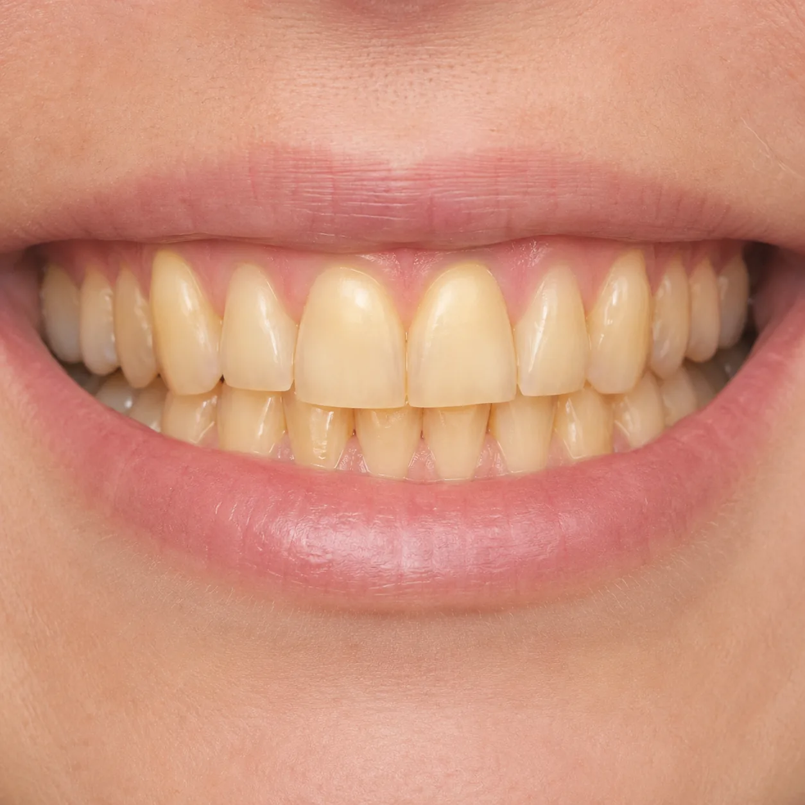
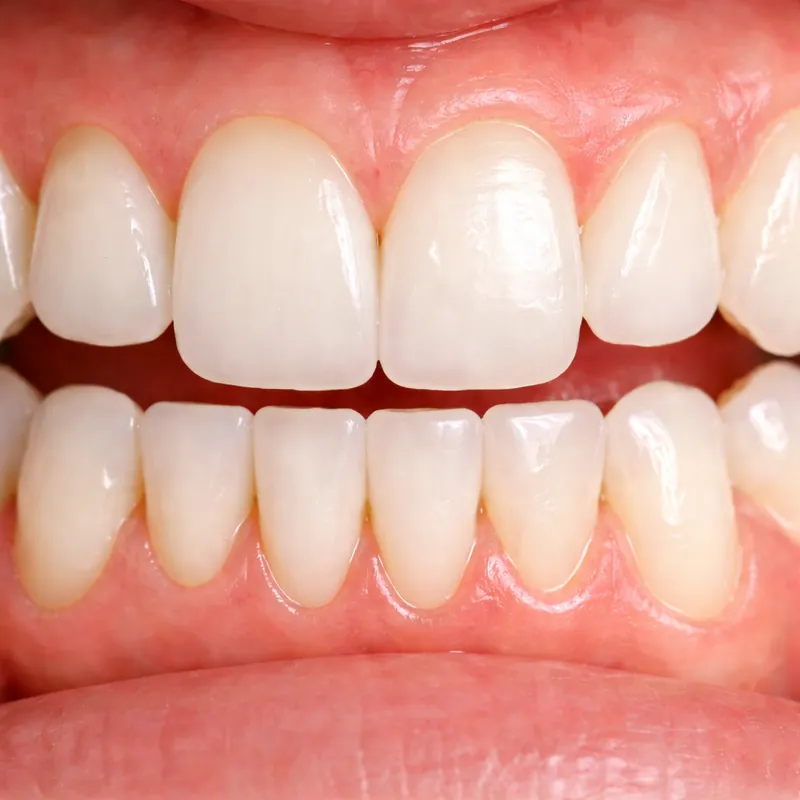
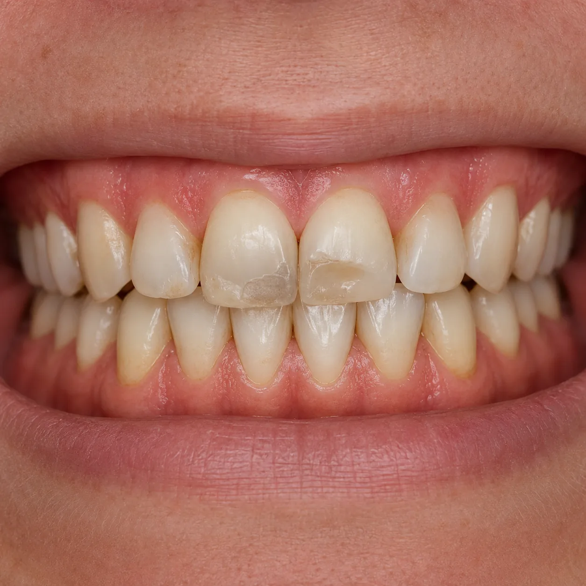
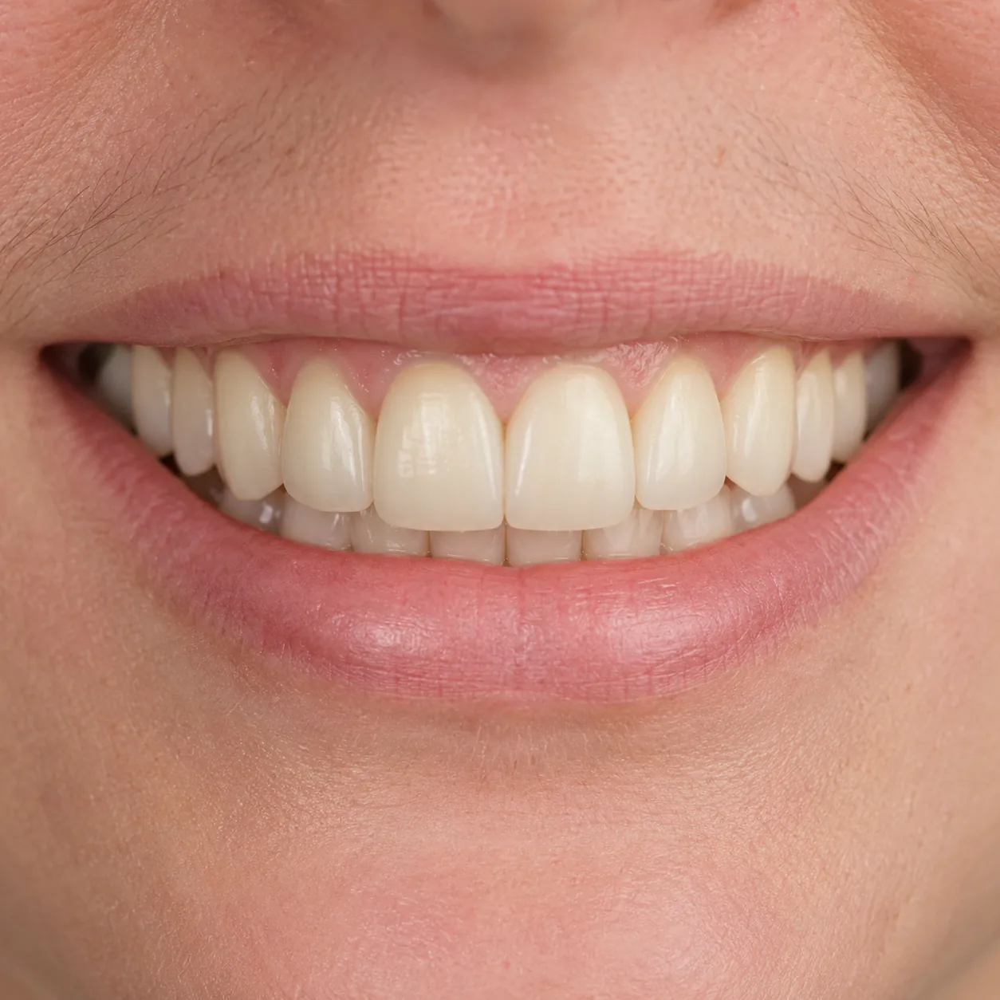
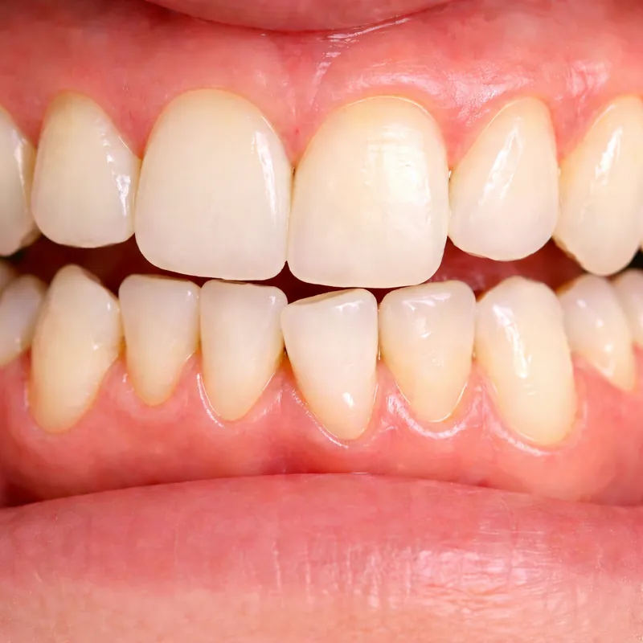
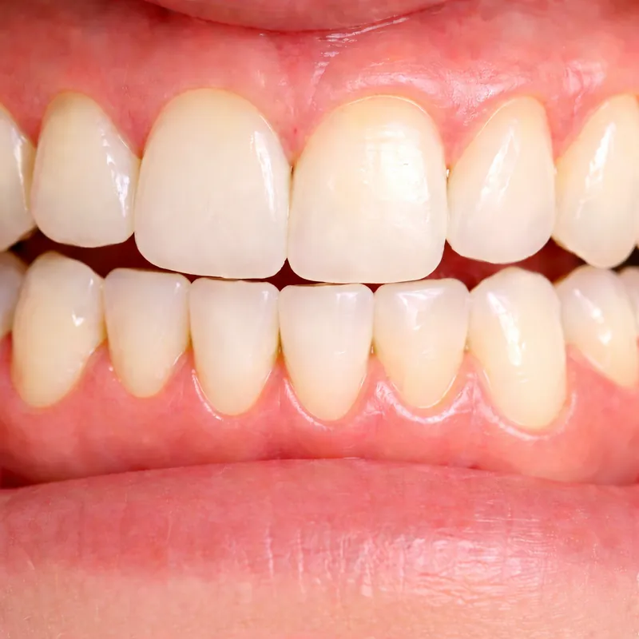
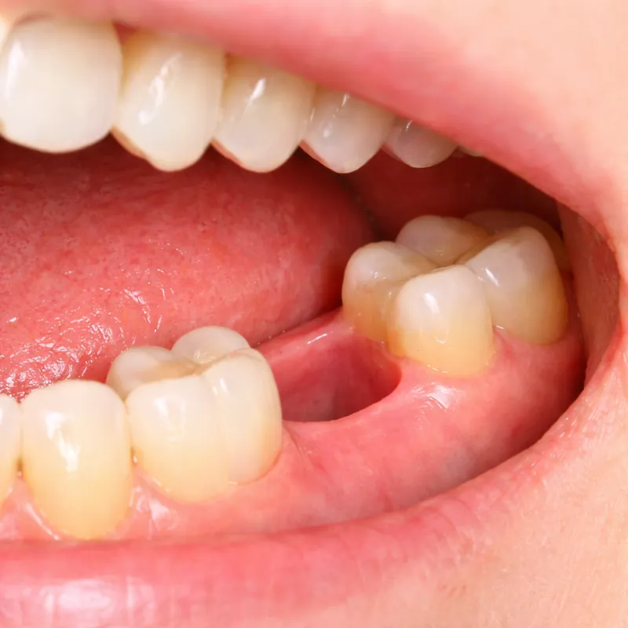
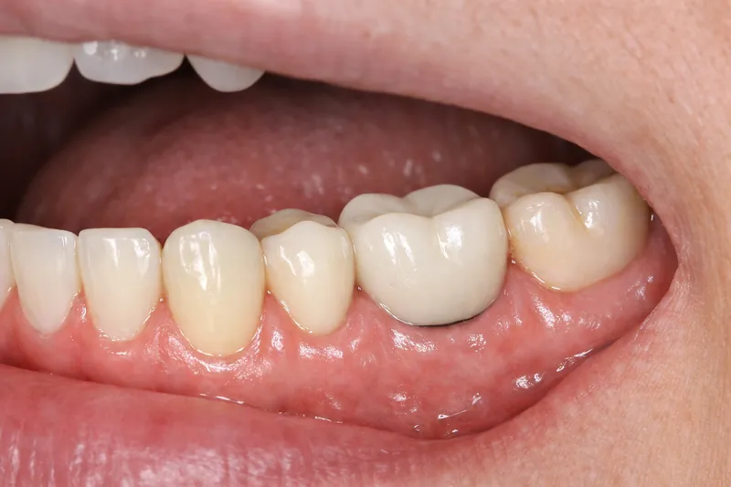
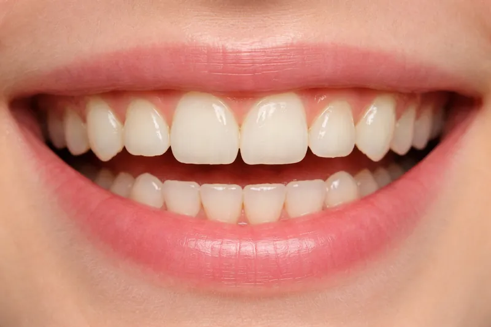
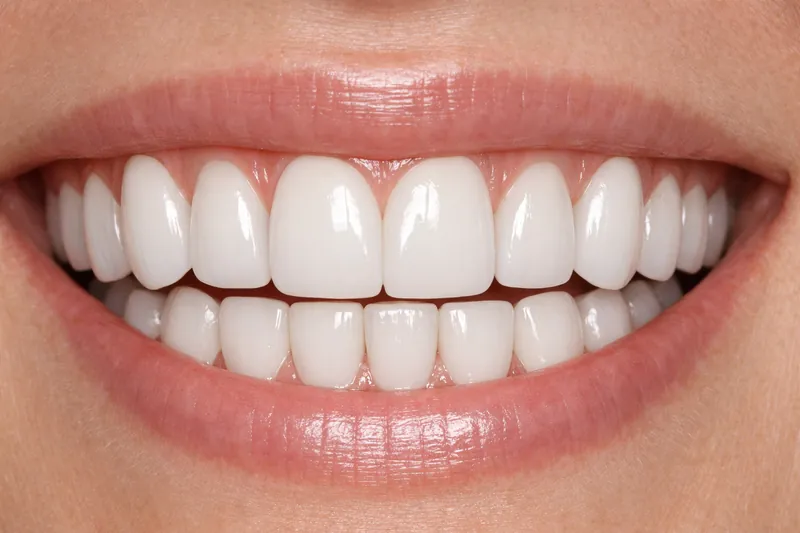

診療内容
お口のお悩み、なんでもご相談ください

一般歯科
虫歯や歯周病の治療から、詰め物・被せ物の修復まで。当院では「なるべく歯を削らない・抜かない」治療を基本方針としています。
- 虫歯治療（MI治療）
- 歯周病治療
- 根管治療（マイクロスコープ使用）
- 詰め物・被せ物（セラミック対応）
- 入れ歯（部分・総義歯）
痛みの少ない麻酔
表面麻酔ジェル＋電動麻酔器の2段階で、注射の痛みを最小限に抑えます。

小児歯科
お子さまの「初めての歯医者」を大切にします。無理に治療はせず、まずは歯科医院の雰囲気に慣れることから始めます。キッズスペースで遊んだあと、診察台に座ってみる。お口を開けて数を数える練習。一つひとつのステップを、お子さまのペースで進めます。
- フッ素塗布
- シーラント（奥歯の溝の予防処置）
- 乳歯の虫歯治療
- 咬合誘導（歯並び予防）
- 歯磨き指導（親子向け）
「がんばったね！シール」
治療後にシールをプレゼント。お子さまの「もう一回来たい！」を応援します。

審美歯科

ホワイトニング
オフィスホワイトニング、ホームホワイトニング、デュアルホワイトニングの3つのメニューからお選びいただけます。ライフスタイルに合わせた最適なプランをご提案します。

セラミック治療
天然歯に近い美しさと耐久性を兼ね備えた素材で、自然で美しい口元を実現します。
| 素材 | 審美性 | 耐久性 |
|---|---|---|
| e.max | ◎ | ○ |
| ジルコニア | ○ | ◎ |
| ラミネートベニア | ◎ | ○ |

矯正歯科
副院長・美咲が担当する専門外来です。お子さまから大人まで、幅広い矯正メニューに対応しています。
目立たない透明のマウスピースで歯並びを整えます。取り外し可能で食事や歯磨きもストレスフリー。
複雑な症例にも対応可能な従来型の矯正治療。目立ちにくいセラミックブラケットもお選びいただけます。
6歳前後からの早期矯正で、将来の歯並びの土台を作ります。顎の成長を利用した負担の少ない治療です。
前歯のすき間や軽度のデコボコなど、気になる部分だけを短期間で改善。

インプラント
失った歯を、自分の歯のように取り戻す。歯科用CTによる精密な診断のもと、安全性の高いインプラント治療を行います。骨の状態から最適な術式を選択し、長期的に安定する治療計画をご提案します。
精密検査・CT撮影
約60分
治療計画のご説明・同意
インプラント埋入手術
約60〜90分
治癒期間
2〜6ヶ月
上部構造（被せ物）装着
メンテナンス
3〜6ヶ月ごと
口腔外科

親知らずの抜歯
大学病院レベルの難症例にも対応。歯科用CTで事前に神経の位置を確認し、安全に抜歯を行います。

顎関節症
顎の痛み・音・開口制限の診断と治療。マウスピース・薬物・運動療法を組み合わせて改善します。

口腔内のできもの
嚢胞・粘液瘤等の小手術に対応。必要に応じて高次医療機関への紹介も行います。
症例紹介
実際の治療例をご紹介します


Before After審美歯科
ホワイトニング
治療期間: オフィス＋ホーム 2週間
※効果には個人差があります。施術に伴い知覚過敏が生じる場合があります。


Before After審美歯科
セラミッククラウン（前歯4本）
治療期間: 約2ヶ月
※噛み合わせによりセラミックが欠ける可能性があります。


Before After矯正歯科
マウスピース矯正（上下）
治療期間: 約10ヶ月
※治療期間は症例により異なります。後戻りを防ぐためリテーナーの装着が必要です。


Before Afterインプラント
インプラント（下顎臼歯1本）
治療期間: 約4ヶ月
※外科手術を伴います。術後の腫れ・痛みが数日続く場合があります。


Before After審美歯科
ラミネートベニア（前歯2本）
治療期間: 約3週間
※歯を薄く削る必要があります。破損時は再製作が必要です。

治療のご相談・ご予約はこちら
お電話またはWEBからお気軽にどうぞ